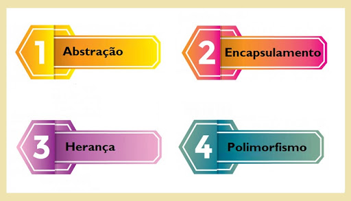

O que é necessário para ser um técnico de informatica?
O Técnico em Informática é um profissional com competências para manipular computadores e sistemas operacionais, desenvolver sistemas computacionais que auxiliem na rotina de trabalho das organizações; realizar manutenções em sistemas; conceber e implementar soluções de software baseadas em banco de dados; conhecer e aprender a aplicar as novas tendências tecnológicas para solução de problemas; desenvolver aplicações e sites para Internet; elaborar e documentar projetos de software; entender o funcionamento e solucionar problemas de Hardware e Software; identificar e entender o funcionamento de tecnologias empregadas nas redes de computadores; integrar-se com facilidade a grupos de trabalho.

Matérias Estudadas
Laboratório de Sistemas Operacionais
Fornecer subsídios para o aluno compreender a estrutura básica de organização e funcionamento dos computadores e o gerenciamento de seus recursos pelos sistemas operacionais.

Introdução à Computação
O computador e a internet como ferramentas de trabalho e desenvolvimento para o profissional de informática. Informação digital e sua representação: códigos digitais, sistemas numéricos e aritmética computacional. Elementos da lógica digital. Unidades de medidas de informação, velocidade e transferência de dados. Tipos e função das memória usadas nos sistemas computacionais. Arquitetura e componentes básicos do hardware e software computador.
Algoritmos e Linguagem de Programação
As linguagens de programação tratam os dados de um computador através do uso de algoritmos. Um algoritmo é uma estruturação passo-a-passo de como um determinado problema deve ser resolvido de forma não-ambígua (ou como muitos comparam "uma receita de bolo") .
Fundamentos e Aplicação da Orientação e Objetos
O paradigma Orientado a Objetos. Conceitos fundamentais da Orientação a Objetos: Classe, Objeto, Atributo, Método, Encapsulamento, Associação (Agregação e Composição), Herança, Polimorfismo. Aplicação dos conceitos da Orientação a Objetos em uma linguagem de programação.
Fundamentos e Modelagem de Banco de Dados
Fornecer ao aluno conhecimentos relativos ao modelo relacional de banco de dados. Capacitar o aluno para a modelagem de banco de dados relacionais, bem como o uso da linguagem SQL.

Fundamentos de Rede de Computadores
No mundo globalizado em que vivemos, é imprescindível o uso das tecnologias, pois facilitam nossas tarefas diárias. Nesse ambiente onde precisamos interagir uns com os outros constantemente, contamos com diversos recursos de comunicação que interligam vários equipamentos eletrônicos e nos dão respostas precisas e rápidas, atendendo aos nossos anseios.

Introdução ao desenvolvimento WEB
Desenvolvimento de sites com tecnologia HTML e compreensão dos fundamentos da organização e estruturação de uma página web. Utilização do CSS para definição de layout e organização da disposição dos elementos de uma página de acordo com um plano de estruturação do site. Aplicação de tecnologia javascript para capacitar recursos dinâmicos numa página web.

Modelagem de Sistemas
Fornecer uma visão geral dos processos de desenvolvimento de software. Apresentar a linguagem de modelagem orientada a objetos UML e seus diagramas de definição, auxiliando o aluno a especificar projetos de software orientado a objetos. Compreender técnicas para a elicitação de requisitos.
Linguagem de Programação para WEB
Linguagem de programação PHP.


IFPR - Instituto Federal do Parana - Todos os direitos reservados